Kushimoto, Wakayama: things to do, food and stays
Kushimoto · Wakayama
Kushimoto
Highlighted on the Wakayama map.
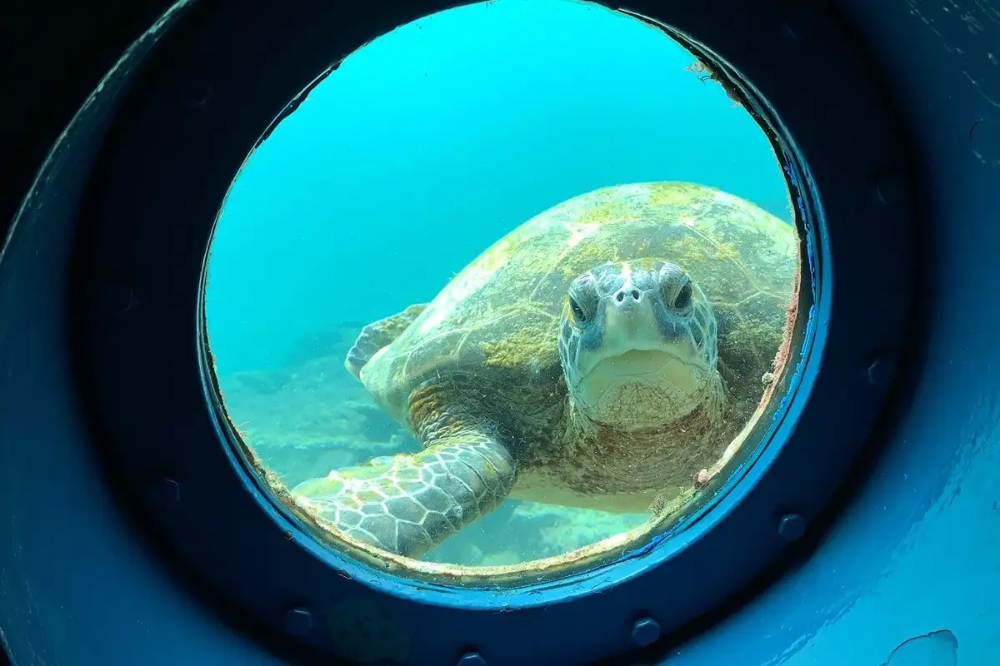
Stay
本州最南端 暮らすように泊まる古民家 NOIE （旧：NIPPONIA HOTEL 串本 熊野海道）
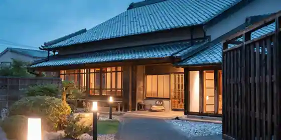
Honshu Sainantan Kura Suyoni Toma Ru Ko Minka NOIE (Kyu : NIPPONIA HOTEL Kushimoto Kumano Kaido)
Inn in Kushimoto with a renovated traditional house.
メルキュール和歌山串本リゾート&スパ
Merukyuru Wakayama Kushimoto Resort & Supa
Villa AjU
Villa AjU
Inn in Kushimoto with one group per day.
ビーチテラス串本
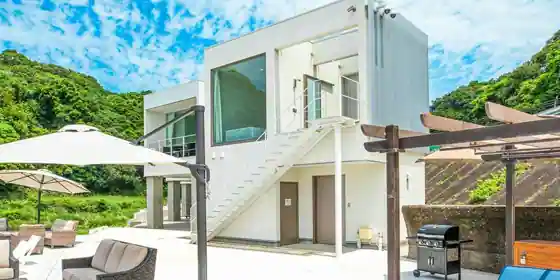
Bichi Terrace Kushimoto
フェアフィールド・バイ・マリオット・和歌山串本
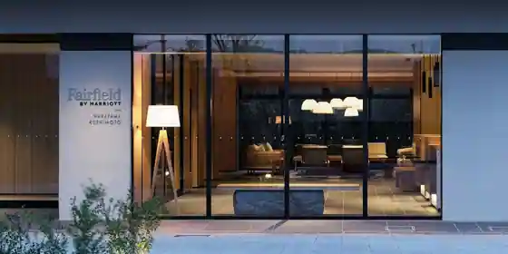
Feafirudo Bai Mariotto Wakayama Kushimoto
√～Root～
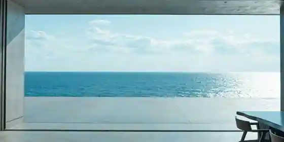
~Root~
メルキュール和歌山串本リゾート＆スパ
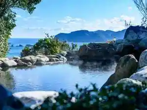
Merukyuru Wakayama Kushimoto Resort & Supa
Resort hotel in Sangodai, Kushimoto with scenic views.
大江戸温泉物語 南紀串本
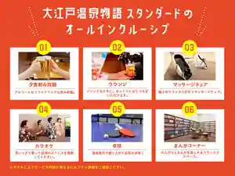
Oedo Onsen Monogatari Nanki Kushimoto
Inn at Oedo Onsen in Kushimoto.
民宿 はし杭
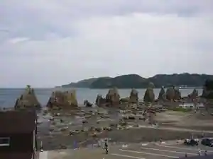
Minshuku Hashi Kui
マーケットステイ串本
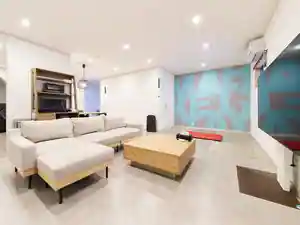
Makettosutei Kushimoto
Ｂａｙ Ｓｉｄｅ Ｉｎｎ 串本館
Bay Side Inn Kushimoto Kan
ホテル シーカンス
Hotel Shikansu
Hotel in Kushimoto with business travelers.
Dining
松寿司
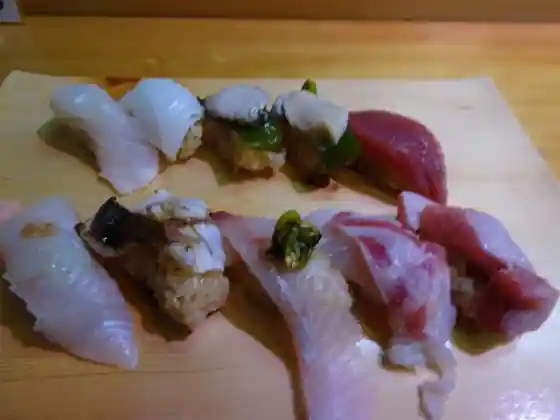
Matsuzushi
料理 萬口
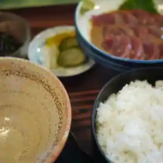
Ryori Man Kuchi
串本旬彩 おおはし
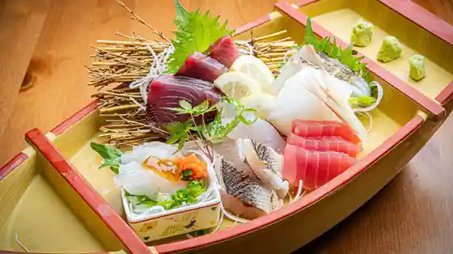
Kushimoto Jun Sai Ohashi
うすかわ饅頭儀平 本店
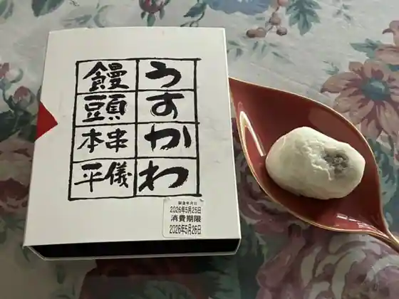
Usukawa Manju Yoshihira Hon
パンとカフェ nagi
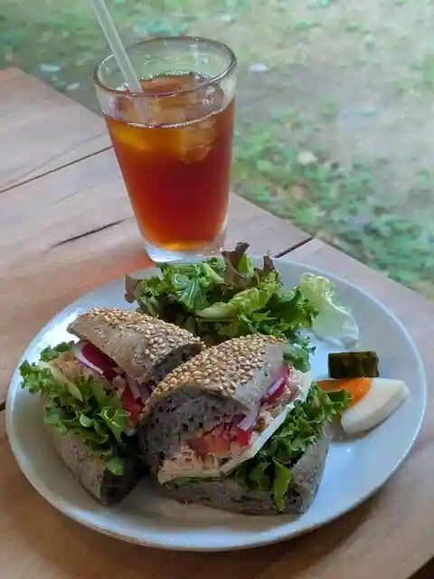
Bakery To Cafe nagi
潮岬観光タワー
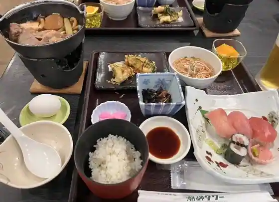
Shionomisaki Kanko Tawa
サンドリア
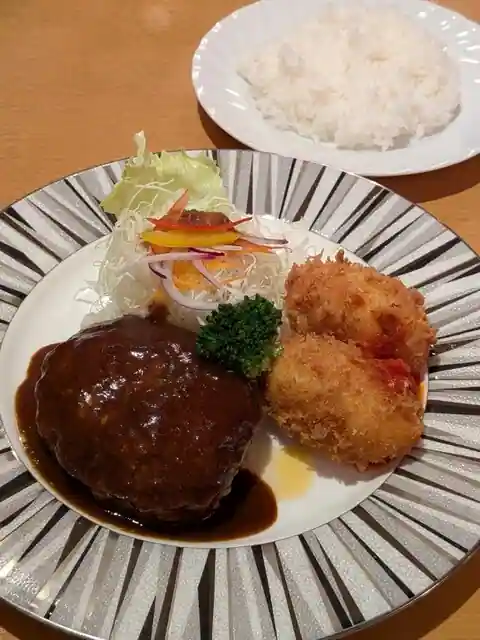
Sandoria
東うなぎ 串本支店
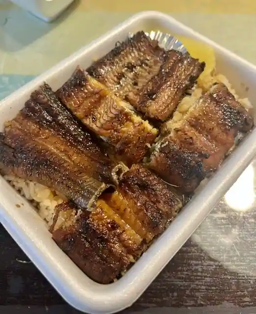
Higashi Unagi Kushimoto Shi
すし浜田
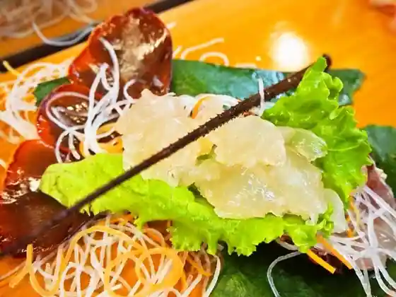
Sushi Hamada
TSUBAKI COFFEE AND MORE
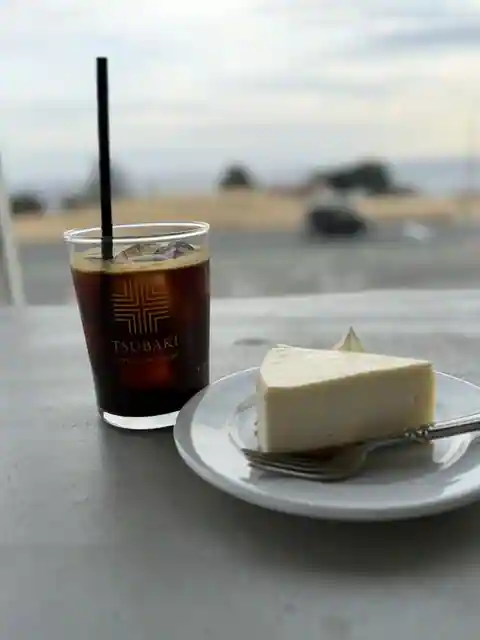
TSUBAKI COFFEE AND MORE
弁天前食堂
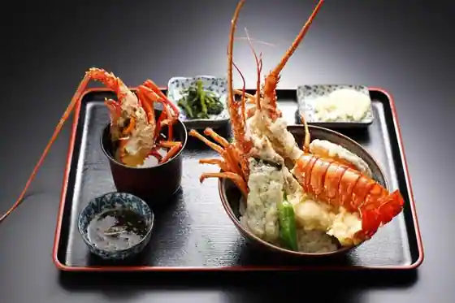
Benten Mae Shokudo
水門まつり
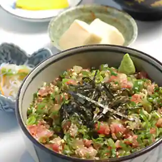
Suimon Matsuri
はし杭
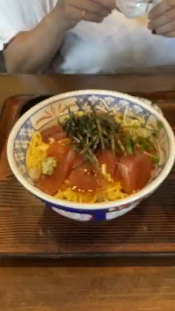
Hashi Kui
儀平 橋杭店
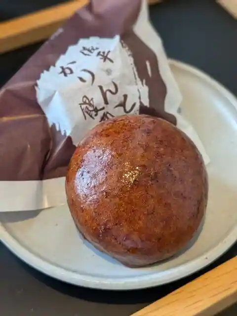
Yoshihira Hashigui
道の駅 くしもと橋杭岩
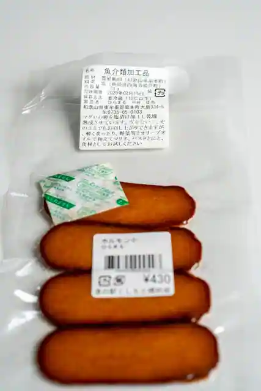
Michi No Eki Kushimoto Hashigui Iwa
香蔵
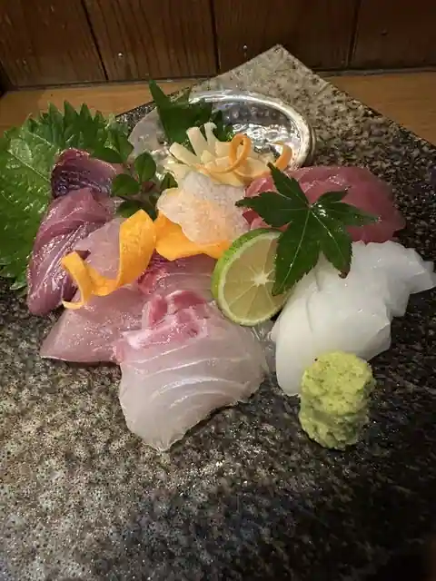
Kaori Kura
たい島
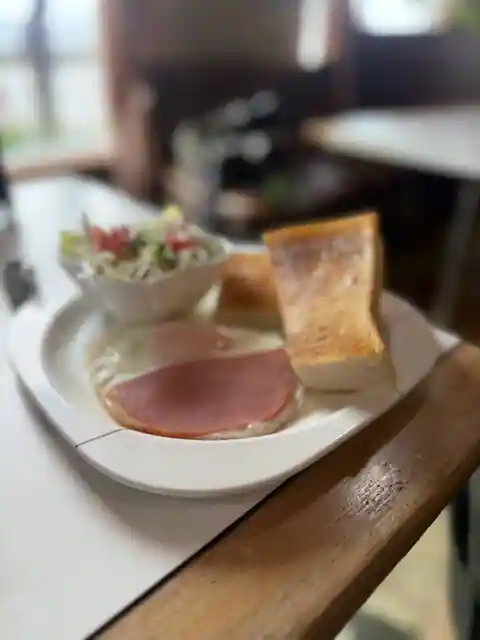
Tai Shima
うどんとうなぎの古座川
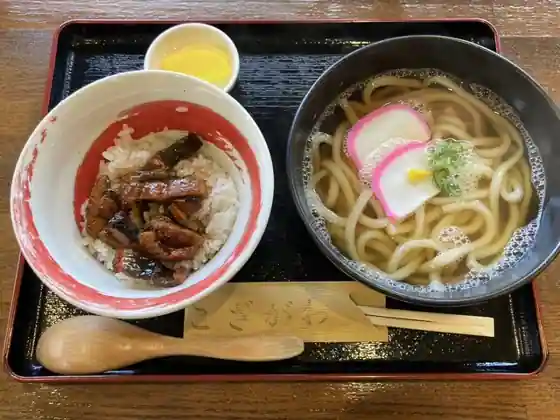
Udontonagino Kozagawa
てんません
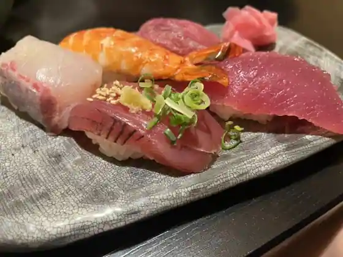
Tenmasen
SABAKI DINING
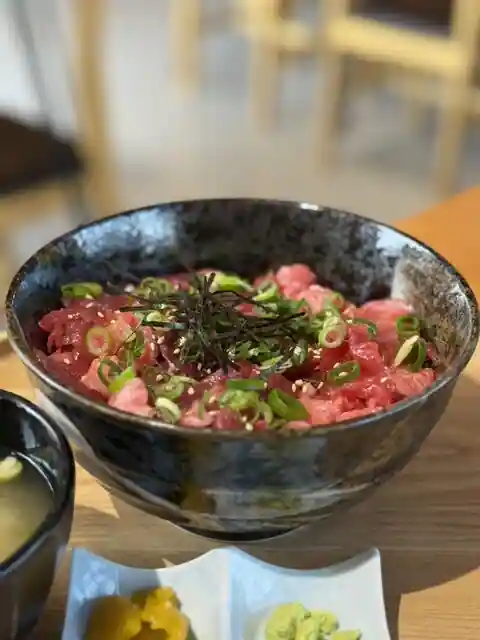
SABAKI DINING
台湾料理 常楽園
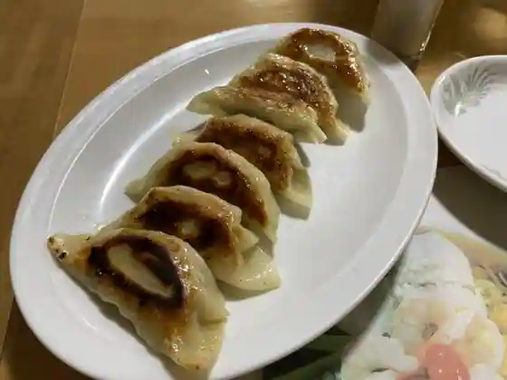
Taiwan Ryori Joraku Sono
橋杭観光センター
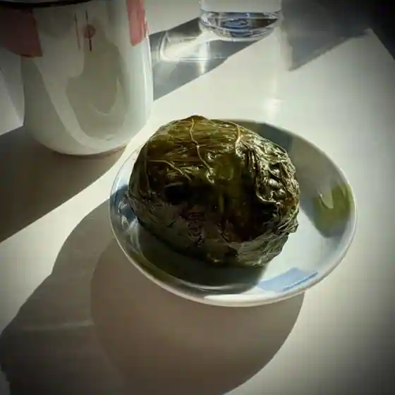
Hashigui Kanko Center
Sights
Hashigui Iwa
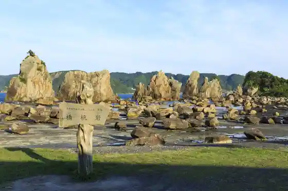
Kushimoto Kaichu Park
Shionomisaki Lighthouse
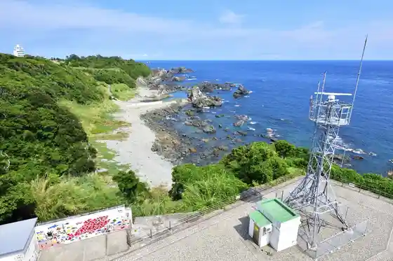
Boro no Shiba to Shionomisaki Kanko Tawa
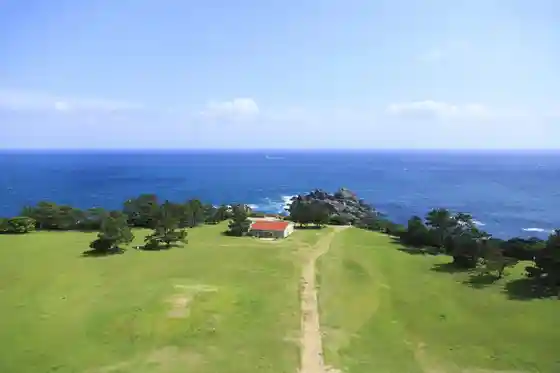
Uchu Fureai Horu Sora Miru
Toruko Memorial Museum
Kashino Saki Lighthouse
Nanki Kumano Jio Park Center
Kyuryu Shima
Kushimoto Okyo Ashi Yuki Kan
Umi Kongo
Kashino Saki no Kujira Yamami
So Shima